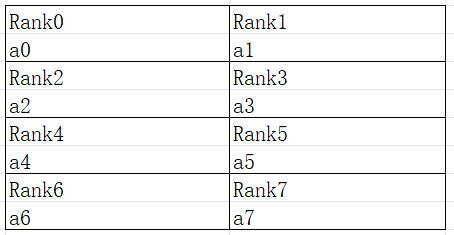

高阶算子级并行

概述
算子级并行 是大模型训练推理中常用的并行技术，它可以将张量切分到多卡上，有效降低单卡上的显存。MindSpore进行算子级并行的配置是通过mindspore.ops.Primitive.shard()接口，对算子的每个输入，以tuple描述张量的切分，对于大多数场景配置简易，相应地，该种切分方式仅描述了张量切分，却向用户屏蔽了张量在设备rank上的排布，因此表达的张量切分与设备排布的映射关系有限，无法支撑一些更为复杂的场景的切分。因此，本教程将介绍开放设备排布描述的算子级并行配置方法。
高级算子级并行模型支持的硬件平台包括Ascend、GPU，需要在Graph模式下运行。
背景
算子级并行 章节中介绍了MindSpore对张量的基本切分逻辑，但是不能表达出所有的切分场景。对于一个二维张量 “[[a0, a1, a2, a3], [a4, a5, a6, a7]]”如下图所示的张量分布：

图：二维张量排布示意
可以看到，张量的0轴，如”[a0, a1, a2, a3]”切分到了不连续的卡”[Rank0, Rank4, Rank2, Rank6]”上，而该张量按照strategy=(2, 4)切分，排布应该是如下：

图：二维张量按照切分策略排布示意
从上述例子可以看出来，直接对算子的输入/输出张量按照切分数目进行切分，无法表达出一些有特殊述求的切分场景。
接口配置
为了表达出如上述场景下的切分，对shard 接口进行功能扩展。 in_strategy/out_strategy两个入参，都额外接收新的数量类型tuple(Layout)类型。其中Layout 使用设备矩阵进行初始化，同时要求给设备矩阵的每个轴取一个别名，如”layout = Layout((8, 4, 4), name = (“dp”, “sp”, “mp”))”， 该设备矩阵即描述的是共有128卡，按照(8, 4, 4)的形状进行排列，而每个轴分别取了别名”dp”, “sp”, “mp”，而对Layout进行调用传入的则是这几个轴，每个张量按照其shape选取每个维度期望映射到设备的哪个轴，同时也确定了切分的份数，如这里”dp”就表示在设备排布的最高维度的8个设备内切分8份，而”sp”表示在设备排布的中间维度的4个设备内切分4份，”mp”表示在设备排布的最低维度的4个设备内切分为4份。特别地，张量的一个维度可以映射到设备的多个维度，以表达在一个维度进行多次切分。
上述例子中”[[a0, a1, a2, a3], [a4, a5, a6, a7]]”切分到不连续的卡上，可以如下通过Layout表达
from mindspore import Layout
a = [[a0, a1, a2, a3], [a4, a5, a6, a7]]
layout = Layout((2, 2, 2), name = ("dp", "sp", "mp"))
a_strategy = layout("mp", ("sp", "dp"))
注意到在张量a的”[a0, a1, a2, a3]”进行了两次切分，切分到了设备的”sp”与”mp”两个轴上，这样出来的结果才是：
下面以一个具体的例子进行示例，用户在8个卡上计算二维矩阵乘：Y = (X * W) ，其中设备按照2 * 2 * 2进行组织，X的切分与上述的张量a切分一致：
import mindspore.nn as nn
from mindspore import ops, Layout
import mindspore as ms
ms.set_auto_parallel_context(parallel_mode=ms.ParallelMode.SEMI_AUTO_PARALLEL, device_num=8)
class DenseMatMulNet(nn.Cell):
def __init__(self):
super(DenseMatMulNet, self).__init__()
layout = Layout((2, 2, 2), name = ("dp", "sp", "mp"))
in_strategy = (layout("mp", ("sp", "dp")), layout(("sp", "dp"), "None"))
out_strategy = (layout(("mp", "sp", "dp"), "None"), )
self.matmul1 = ops.MatMul.shard(in_strategy, out_strategy)
def construct(self, x, w):
y = self.matmul1(x, w)
return y
操作实践
下面以Ascend或者GPU单机8卡为例，进行算子级并行操作说明：
样例代码说明
下载完整的样例代码：distributed_operator_parallel。
目录结构如下：
└─ sample_code
├─ distributed_operator_parallel
├── advanced_distributed_operator_parallel.py
├── run_advanced.sh
└── ...
...
其中，advanced_distributed_operator_parallel.py是定义网络结构和训练过程的脚本。run_advanced.sh是执行脚本。
配置分布式环境
通过context接口指定运行模式、运行设备、运行卡号等，与单卡脚本不同，并行脚本还需指定并行模式parallel_mode为半自动并行模式，并通过init初始化HCCL或NCCL通信。max_device_memory限制模型最大可以的设备内存，为了在Ascend硬件平台上给通信留下足够的设备内存，GPU则不需要预留。此处不设置device_target会自动指定为MindSpore包对应的后端硬件设备。
import mindspore as ms
from mindspore.communication import init
ms.set_context(mode=ms.GRAPH_MODE)
ms.set_context(max_device_memory="28GB")
ms.set_auto_parallel_context(parallel_mode=ms.ParallelMode.SEMI_AUTO_PARALLEL)
init()
ms.set_seed(1)
数据集加载
在算子级并行场景下，数据集加载方式与单卡加载方式一致，代码如下：
import os
import mindspore.dataset as ds
def create_dataset(batch_size):
dataset_path = os.getenv("DATA_PATH")
dataset = ds.MnistDataset(dataset_path)
image_transforms = [
ds.vision.Rescale(1.0 / 255.0, 0),
ds.vision.Normalize(mean=(0.1307,), std=(0.3081,)),
ds.vision.HWC2CHW()
]
label_transform = ds.transforms.TypeCast(ms.int32)
dataset = dataset.map(image_transforms, 'image')
dataset = dataset.map(label_transform, 'label')
dataset = dataset.batch(batch_size)
return dataset
data_set = create_dataset(32)
定义网络
在当前半自动并行模式下，需要用ops算子(Primitive)定义网络。用户可以在单卡网络的基础上手动配置一些算子的切分策略，例如配置策略后的网络结构为：
import mindspore as ms
from mindspore import nn, ops
class Network(nn.Cell):
def __init__(self):
super().__init__()
self.flatten = ops.Flatten()
self.fc1_weight = ms.Parameter(initializer("normal", [28*28, 512], ms.float32))
self.fc2_weight = ms.Parameter(initializer("normal", [512, 512], ms.float32))
self.fc3_weight = ms.Parameter(initializer("normal", [512, 10], ms.float32))
self.matmul1 = ops.MatMul()
self.relu1 = ops.ReLU()
self.matmul2 = ops.MatMul()
self.relu2 = ops.ReLU()
self.matmul3 = ops.MatMul()
def construct(self, x):
x = self.flatten(x)
x = self.matmul1(x, self.fc1_weight)
x = self.relu1(x)
x = self.matmul2(x, self.fc2_weight)
x = self.relu2(x)
logits = self.matmul3(x, self.fc3_weight)
return logits
net = Network()
layout = Layout((2, 2, 2), ("dp", "sp", "mp"))
net.matmul1.shard((layout("mp", ("sp", "dp")), layout(("sp", "dp"), "None")))
net.relu1.shard(((4, 1),))
layout2 = Layout((8,), ("tp",))
net.matmul2.shard((layout2("None", "tp"), layout2("tp", "None")))
net.relu2.shard(((8, 1),))
以上网络的ops.MatMul()和ops.ReLU()算子都配置了切分策略，其中net.matmul1同样与上文中张量a的切分排布一致，net.matmul2在MatMul的Reduce轴切分了8份。
训练网络
在这一步，我们需要定义损失函数、优化器以及训练过程，这部分与单卡写法一致：
import mindspore as ms
from mindspore import nn
optimizer = nn.SGD(net.trainable_params(), 1e-2)
loss_fn = nn.CrossEntropyLoss()
def forward_fn(data, target):
logits = net(data)
loss = loss_fn(logits, target)
return loss, logits
grad_fn = ms.value_and_grad(forward_fn, None, net.trainable_params(), has_aux=True)
@ms.jit
def train_step(inputs, targets):
(loss_value, _), grads = grad_fn(inputs, targets)
optimizer(grads)
return loss_value
for epoch in range(10):
i = 0
for image, label in data_set:
loss_output = train_step(image, label)
if i % 10 == 0:
print("epoch: %s, step: %s, loss is %s" % (epoch, i, loss_output))
i += 1
运行单机8卡脚本
接下来通过命令调用对应的脚本，以mpirun启动方式，8卡的分布式训练脚本为例，进行分布式训练：
bash run_advanced.sh
训练完后，日志文件保存到log_output目录下，其中部分文件目录结构如下：
└─ log_output
└─ 1
├─ rank.0
| └─ stdout
├─ rank.1
| └─ stdout
...
关于Loss部分结果保存在log_output/1/rank.*/stdout中，示例如下：
epoch: 0, step: 0, loss is 2.3016002
epoch: 0, step: 10, loss is 2.2889402
epoch: 0, step: 20, loss is 2.2848126
epoch: 0, step: 30, loss is 2.248126
epoch: 0, step: 40, loss is 2.1581488
epoch: 0, step: 50, loss is 1.8051043
epoch: 0, step: 60, loss is 1.571685
epoch: 0, step: 70, loss is 1.267063
epoch: 0, step: 80, loss is 0.9873328
epoch: 0, step: 90, loss is 0.7807965
...
其他启动方式如动态组网、rank table的启动可参考启动方式。